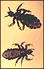

В августовском номере журнала Pediatrics за 2010 г. опубликованы рекомендации по диагностике, ведению пациентов и протоколы лечения головного педикулёза у школьников.
Головной педикулёз не представляет собой серьёзной угрозы здоровью детей, однако вызывает переживания у родителей школьников. С момента публикации предыдущего клинического обзора Американской академии педиатрии с рекомендациями по лечению головного педикулёза у детей (2002 г.) произошли некоторые изменения в профиле резистентности вшей к различным противопаразитарным препаратам, а также появились дополнительные механические методы удаления паразитов. В новом клиническом обзоре (Pediatrics, август 2010 г.) обсуждаются современные подходы к диагностике и лечению головного педикулёза у школьников.
Диагностика головного педикулёза не составляет особых трудностей и основана на выявлении живых паразитов или их яиц (гнид). Авторы указывают на недопустимость проведения «профилактической» обработки противопаразитарными препаратами школьников, у которых не обнаружено вшей или гнид.

Идеальный препарат для лечения головного педикулёза должен быть абсолютно безопасным, не содержать вредных для человека химических веществ, доступным для безрецептурного отпуска, лёгким в использовании и недорогим. При выборе противопаразитарного препарата врачам следует принимать во внимание такие факторы как эффективность и безопасность, профиль резистентности вшей в данном регионе (если он известен), удобство применения препарата и его стоимость.
Основные рекомендации по лечению школьников с головным педикулёзом приведены ниже.
- Головной педикулёз не должен служить основанием для отстранения ребёнка от занятий в школе.
- Врачи-педиатры должны быть в курсе современных подходов к лечению головного педикулёза у школьников и оказывать консультативную помощь по данному вопросу родителям учащихся и учителям.
- Для лечения головного педикулёза в качестве препаратов выбора рекомендуется использование 1% перметрина или пиретрина, за исключением случаев, когда в регионе отмечается подтверждённая устойчивость паразитов к этим препаратам.
- Родителям должны быть предоставлены подробные инструкции по надлежащему применению этих препаратов. Современные препараты, содержащие пиретрин или перметрин, не обеспечивают полного уничтожения гнид, поэтому их следует применять, как минимум, дважды с соответствующим временным промежутком. Такая же тактика рекомендуется при обнаружении сохранившихся живых вшей после обработки малатионом. Механическое удаление гнид сразу после обработки противопедикулёзными средствами не является обязательным для предотвращения распространения паразитов, однако его можно рекомендовать с целью уменьшения числа случаев ложно положительных диагнозов активного педикулёза при контрольных осмотрах школьников.
- Приемлемыми альтернативами применению противопаразитарных препаратов являются вычесывание паразитов из влажных волос или использование «окклюзионного» метода — обработки головы вазелином или мягкими очищающими средствами. При использовании этих методов также необходимо их повторное (по меньшей мере, 2-кратное) использование с 2-недельным интервалом между процедурами. Показаниями для применения альтернативных методов лечения педикулёза являются случаи подтверждённой резистентности вшей к доступным противопедикулёзным средствам, ранний возраст ребёнка, не позволяющий применять химические противопаразитарные средства, а также отказ родителей от использования лекарственных препаратов.
- У детей старше 6 месяцев в регионах с подтверждённой устойчивостью вшей к пиретрину или перметрину или при неэффективности адекватно проведённого лечения этими препаратами можно рекомендовать применение 5% бензилового спирта. У детей старше 2 лет в аналогичных ситуациях возможно применение 0,5% малатиона.
- Оказалось, что периодический скрининг в школах с целью выявления головного педикулёза не приводит к значительному сокращению частоты головного педикулёза у школьников. Более эффективными профилактическими мерами могут быть обучение школьников общегигиеническим правилам, направленным на предупреждение перекрёстного инфицирования (индивидуальная расческа, головные уборы и т.д.), а также их родителей и учителей своевременному выявлению симптомов головного педикулёза у школьников.
Frankowski BL, Bocchini JA Jr.
The Council on School Health and Committee on Infectious diseases.
Clinical Report - Head Lice. Pediatrics. 2010 Jul 26.
Опубликовано на сайте журнала Pediatrics, июль 2010 г.